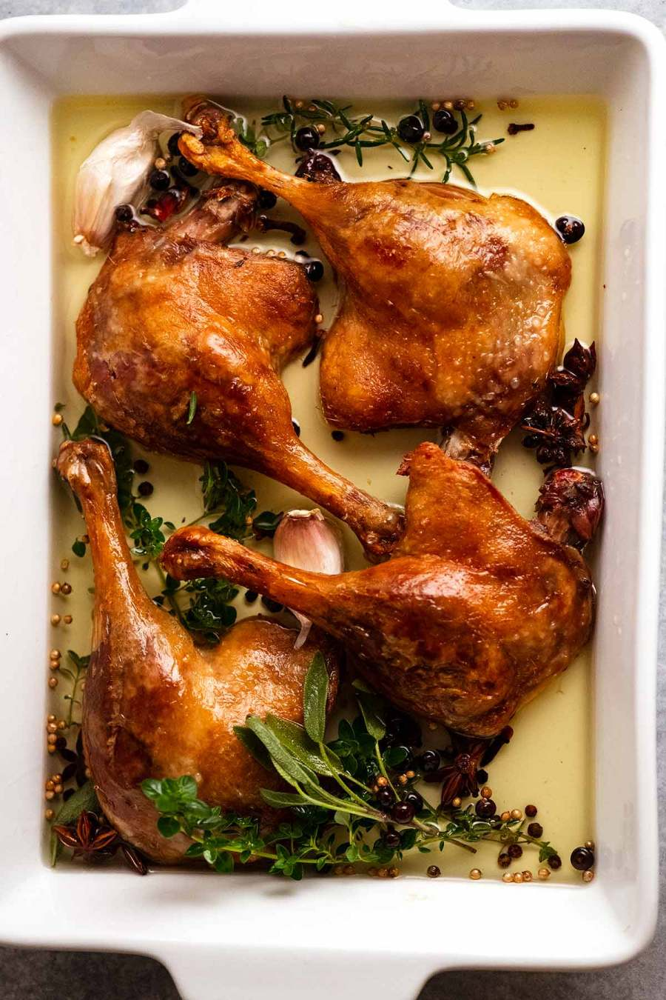

Duck Confit

What is Duck Confit?
Called Confit de Canard in French, Duck Confit is an elegant and classic French bistro dish. Confit (pronounced kon-FEE) here refers to the method of slow-cooking the duck in its fat, yielding gorgeously tender meat. The legs are then briefly sizzled in a hot pan or oven until the paper-thin skin is wonderfully crisp.
Confit traditionally was done for preservation purposes, allowing the duck to be stored for long periods. This still has benefits today because it means we can easily make Duck Confit ahead of time and keep it for use whenever the fancy takes us!
Ingredients
- Duck Fat
- Duck Legs
- Salt
- Pepper
- Herbs
Steps
- Coat duck with salt, herbs and spices: Place duck legs and all the curing ingredients in a large bowl and toss well with your hands.
- Cure 12 -24 hrs: Transfer to a ceramic or glass dish large enough so the duck legs fit in a single layer but snugly, so they are cosied up with all those herbs and spices. Cover and refrigerate for 12 – 24 hours (no longer is necessary).
- Place duck in a snug roasting pan: Place duck in a small metal roasting pan with high sides in which they fit snugly, touching each other, but in a single layer. The pan I use is 27cm x 21cm (10.5″ x 8″); You need a pan with high sides so hot duck fat doesn’t slosh out when you handle it – hot fat and hands don’t mix! It’s best if it’s a metal roasting pan so you can put it straight on the stove to kickstart the fat heating step
- Cover with duck fat: Pour fat over duck legs. You need enough so they are virtually fully submerged. A little bit of the skin or bone above the surface is fine because the duck will shrink under as it cooks. The main aim here is to ensure the flesh is fully submerged;
- Carefully transfer to the oven. (Be very careful! Hot duck fat is dangerous!) Slow-cook for 8 hours at 100°C / 210°F (80°C fan). I typically do this overnight. In an oven this low, I feel perfectly safe snoozing away!
- Remove from oven: This is what it looks like when it comes out of the oven. It will look totally unimpressive with pale and flabby skin. But just wait! The best is yet to come!
- Skin crisping: Pour 2.5cm / 1″ boiling water water into a roasting pan, then set a rack over the pan. Place the duck on the rack, skin side up. The water keeps the flesh of the duck ultra moist whilst allowing the skin to crisp up beautifully. This method of crisping up the skin works far better than the stove-searing methods that other recipes use. It gives the most even colour and, more importantly, crispy skin all over! In contrast, although faster, pan searing will only crisp the skin where the skin is in contact with the pan;
- Crisp skin: Roast duck for 40 minutes in a hot oven (240°C / 465°F (220°C fan)) until the skin is a deep golden colour and crispy. Rotate the pan as needed to make the colour even all over. You won’t have problems with smoke because the fat will drip down into the water; and
- Serve straight away while the skin is at it’s crispiest best! There is no need to rest duck because the meat is already cooked. In fact, the skin loses crispiness if it’s sitting around.